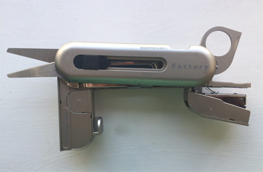

Factory Multi-tool
Good design makes the otherwise ordinary exciting. This multi-tool makes tasks efficient and fun by combining scissors, a stapler, a magnifying glass, a tape measure, a box cutter, screw drivers, a compass, and an LED light. The whole kit is lightweight, performs each of the functions well, and fits in a pocket. Except for the screwdrivers, each tool can be accessed and operated with one hand. Its rounded edges make it feel comfortable to grip and hold. It solves day to day problems in a sleek, compact unit.